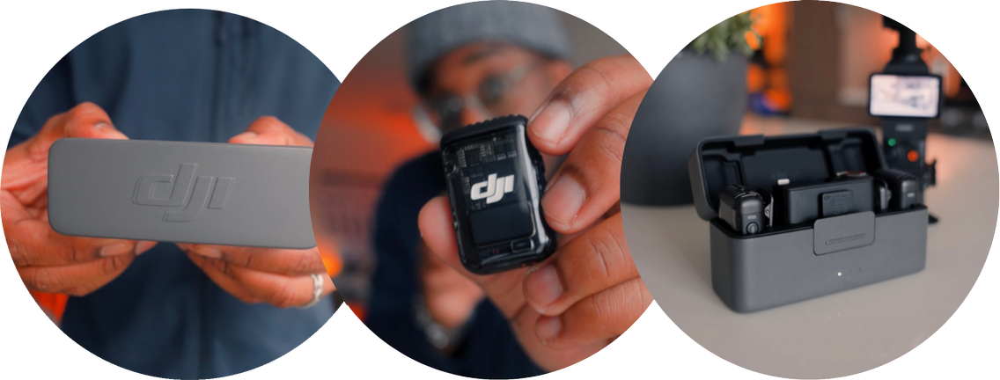
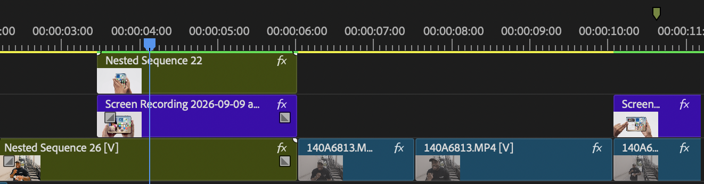

A practical system for turning your story, skills, and ideas into high-quality content that builds trust, authority, and opportunity.
A Step-by-Step Guide@stephenxmichael
P.02 — THE AUTHOR
The Author
Shooting Stars: Content FrameworkIntro
Hello there! I’m Stephen Michael.
The
Author
Stephen Michael
Filmmaker · Creator · Educator
For the past 11 years, I've been immersed in the world of visual storytelling.
I started as a photographer and videographer, working on creative projects with individuals, brands, and entrepreneurs — learning how cameras work, how lighting shapes a scene, and how strong visuals can communicate an idea before a single word is spoken.
Over time, what started as a creative pursuit turned into a professional skillset as a content creator that allowed me to collaborate with brands, grow an audience of over 40,000 followers online, and build a career around creating high-quality visual content.
Within my first year of creating content full-time, I had left my 9-to-5 and passed six figures. That did not come from a revenue formula. It came from learning to communicate ideas visually, showing up consistently, and letting quality work compound into trust and opportunity.
And this is EXACTLY what this guide is designed to give you.
Inside this book, I'll walk you through the Shooting Stars Content Framework — a practical system for turning your story, skills, and ideas into high-quality content that builds trust, authority, and opportunity. You'll learn how to understand your camera, film yourself with intentional angles and storytelling, improve your lighting and audio, develop stronger content ideas, and ultimately build a personal brand that people recognize and trust.
Whether you're a creator, entrepreneur, professional, freelancer, or business owner, if you have something worth sharing, teaching, selling, or building, this guide will give you the tools and structure to do it.
By the end you'll know what to say, how to capture it, how to refine it, and how to deploy it consistently toward a goal that matters to you.
Let's get started!
11
Years
40K+
Audience
05
Stages
6 Figures
Year One
02
P.03 — CHAPTER 01 DIVIDER
Chapter One
Shooting Stars: Content FrameworkCh. 01
01
Chapter 01
The Shooting
Stars
Framework
Create with purpose — not simply to create more.
Content is the vehicle. The goal is not more content; it is content that communicates clearly and builds something. S.T.A.R.S. is the system that gets you there.
03
P.04 — THE STARS FRAMEWORK
The Framework
Shooting Stars: Content FrameworkCh. 01
The Five Stages
S.T.A.R.S.
S.T.A.R.S. is the system. This book teaches the framework: five stages that take your content from story to scale.
S
Storytelling
The message behind your content: who you are, what you do, and why it matters to your audience.
01
T
Technique
The tools and skills used to create strong content: scripting, speaking on camera, camera setup, lighting, and audio.
02
A
Angles
How you visually present your story using composition, framing, and intentional camera perspectives.
03
R
Refinement
Turning raw footage into engaging content through editing, pacing, sound, and visual polish.
04
S
Scale
Using consistent content to build visibility, trust, and long-term growth for your brand or business.
05
04
P.05 — 3 REASONS IT WORKS
Why It Works
Shooting Stars: Content FrameworkCh. 01
Why It Works
3 Reasons The Framework Works
01
Connects Creative Skills With Business Value
Many people approach content creation from only one perspective. Some focus heavily on the creative side — camera gear, editing techniques, and visuals — but struggle to create content that actually supports a brand or business. Others focus on marketing and strategy, but their content lacks the visual quality that captures attention online. The Shooting Stars Framework brings both sides together. It teaches the creative skills needed to produce high-quality content while also explaining why that content matters for brand visibility, audience trust, and long-term growth.
02
Works For Any Creator, Business, Or Industry
Whether you are a creator building a personal brand, an entrepreneur launching a product, a business owner growing an online presence, or a professional sharing your expertise, the same core principles still apply. The Shooting Stars Framework focuses on fundamentals that work across industries, making it flexible enough for creators and practical enough for businesses.
03
Makes Content Creation More Consistent
The Shooting Stars Framework simplifies the process by giving you a clear structure for planning, filming, refining, and publishing your content. Instead of guessing what to create next, you’ll have a repeatable approach that helps you produce content more consistently while maintaining quality. And over time, that consistency is what drives real growth.
05
P.06 — WHY YOU SHOULD CARE · full-bleed statement
The Stakes
Shooting Stars: Content FrameworkCh. 01
Why You Should Care
High-quality content does more than capture attention.
It helps build a brand people trust. When your content clearly communicates who you are, what you offer, and why it matters, your audience begins to recognize and connect with your message. Over time, that consistency turns viewers into followers, followers into customers, and customers into people who come back again and again.
06
P.07 — CAPTURING ATTENTION / BUILDING TRUST
S.1 — S.2
Shooting Stars: Content FrameworkCh. 01
The Impact Of Strong Content
Attention, Then Trust
S.1
Capturing Attention
Every day, millions of pieces of content are posted online. In this environment, the biggest challenge is not creating content — it’s earning attention. High-quality visuals, clear messaging, and intentional storytelling make people pause when they’re scrolling. Whether you’re a creator building an audience or a business promoting a product, strong content helps your message land in a crowded digital space.
The goal isn’t just to post more content. The goal is to create content that people actually stop to watch.
S.2
Building Trust
After you have someone’s attention, the next step is building trust. When your content looks polished, clear, and well thought out, it signals professionalism. People naturally associate quality with credibility. For creators, this builds authority with your audience. For entrepreneurs and business owners, it helps customers feel more confident in your brand.
Putting real effort into your content communicates that you take your message, and your audience, seriously.
Hot Take
Carousel posts build trust seamlessly at this stage.
07
P.08 — THE IMPACT OF STRONG CONTENT
The Impact
Shooting Stars: Content FrameworkCh. 01
The Impact Of Strong Content
Content That Works.
Consistent, high-quality content does more than look good. It helps people understand who you are, what you offer, and why it matters. Over time, this builds familiarity, trust, and recognition for your brand.
This is why creators, entrepreneurs, and businesses are investing tens of thousands of dollars improving the quality of their content. The goal of this guide is not just to help you create content.
It’s to help you create content that works.
01
Captures Attention
02
Builds Trust
03
Supports Growth
Content that captures attention, builds trust, and supports long-term growth.
08
P.09 — CHAPTER 02 DIVIDER
Chapter Two
Shooting Stars: Content FrameworkCh. 02
02
Stage 01 — Story
Story
telling
The foundation of addictive content.
“
The most powerful person in the world is the storyteller.
Steve Jobs
You Arrive With
An idea, a skill, or a business worth talking about — and no reliable way to say it so that people remember it.
Why This Stage Exists
Everything downstream gets easier once the message is settled. Without it you are making decisions about lighting and angles in service of nothing in particular.
09
P.10 — WHAT STORY ARE YOU TELLING
Storytelling
Shooting Stars: Content FrameworkCh. 02
Before you think about expensive cameras, lighting setups, or editing techniques…
What Story Are You Telling?
“
Relatability is the #1 brand builder in today's content world.
When you master the art of storytelling, people will not only relate to the brand you're creating, but they'll find commonalities with you on a situational level.
Every video you make will feel like an intimate FaceTime call, letting them know that their thoughts, problems and questions are a part of your world as well.
10
P.11 — S.3 CLARITY MAKES CONTENT EASIER TO CREATE
S.3 — Clarity
Shooting Stars: Content FrameworkCh. 02
S.3 / Clarity Makes Content Easier To Create
Here’s How It Works
Your story gives direction to your content while helping your audience relate to your messaging. When people see themselves in your story, your content becomes more meaningful and memorable. Your story is built around three simple elements.
01
Who You Are
Your perspective, background, and personality. This is what makes your content feel human and relatable.
02
What You Do
The skill, service, product, or expertise you bring to the table.
03
Why It Matters
The value your audience receives from your content. This could be education, inspiration, entertainment, or problem-solving.
When these three elements are clear, your content becomes much more intentional.
Instead of posting randomly, every piece of content reinforces your message and strengthens your brand.
Every piece of content you create, whether it’s a video, a photo, or a short post online, is a form of communication. It tells people something about who you are, what you do, and why it matters. Without a clear story, content often feels random or disconnected.
You may post consistently, but your audience may struggle to understand what you represent or why they should keep paying attention. When your story is clear, creating content becomes much easier. Your ideas become more focused, your message becomes stronger, and your audience begins to recognize what makes your brand unique.
In our framework at Shooting Stars, Storytelling is the first stage because it gives background and purpose to everything that follows.
11
P.12 — S.4 WHY YOUR NICHE IS KEY
S.4 — Your Niche
Shooting Stars: Content FrameworkCh. 02
S.4 / Why Your Niche Is Key
What You’re Known For
When people first start creating content, it’s common to explore a wide range of ideas and topics. Experimenting is part of the process, but long-term growth usually happens when your audience can clearly understand what your content represents. This is where defining your niche becomes important.
Your niche is the space where your knowledge, interests, and the needs of your audience intersect. For creators, this niche might come from a skill, passion, or lifestyle you naturally share. For entrepreneurs and business owners, your niche is often tied directly to the problem your product, service, or expertise helps solve.
When your niche is clear, your content begins to work together instead of feeling scattered.
Each post reinforces the same message and helps your audience quickly understand what you’re known for.
Is Your Niche Too Small?
Many people worry that choosing a niche will limit their audience. In reality, the opposite is usually true. A focused niche makes it easier for the right people to find you and understand exactly what you offer.
12
P.13 — S.5 IDENTIFYING YOUR NICHE · venn diagram
S.5 — The Overlap
Shooting Stars: Content FrameworkCh. 02
S.5 / Identifying Your Niche
Find The Overlap
Start by identifying the overlap between what you know, what you enjoy, and what people find valuable.
Your niche often sits right where these three things overlap.
01
What knowledge or skills do you already have? Think about your profession, hobbies, experiences, or areas where people naturally ask you for advice.
02
What topics do you genuinely enjoy talking about? Creating content consistently becomes much easier when your subject matter is something you naturally care about.
03
What problems can you help people solve? The most valuable content usually helps someone learn something, improve something, or understand something more clearly.
13
P.14 — S.6 BRAND PILLARS INTRO
S.6 Brand Pillars
Shooting Stars: Content FrameworkCh. 02
S.6 — Brand Pillars
How To Never Run Out Of Content Ideas
The structural fix
Think of content pillars as the foundation of your content strategy. They give your brand structure, keep your messaging focused, and make it easier for your audience to understand what they can expect from you.
When your content is built around clear pillars, your ideas begin to multiply. One topic can easily turn into multiple pieces of content that serve your audience in different ways.
1
Topic becomes ten pieces of content
14
P.15 — THE 3 PILLARS OF CONTENT
S.7 The 3 Pillars
Shooting Stars: Content FrameworkCh. 02
S.7 — The 3 Pillars Of Content
Learn. Relate. Trust.
Content pillars are the 3–4 core themes your content revolves around. Instead of posting random ideas, every piece of content you create fits into one of these categories. A simple structure many successful creators and brands use includes three core pillars.
01
Educational
Teaching your audience something useful. This could include tips, tutorials, insights, or breakdowns that help people improve a skill or understand a topic better.
02
Relatable
Sharing your journey, perspective, and experiences so people can connect with the person behind the brand.
03
Authority
Demonstrating your expertise through your work, results, tools, or real-world examples.
Working Together
When these pillars work together, your audience learns from you, relates to you, and begins to trust your expertise.
15
P.16 — S.8 CONTENT PILLAR STUDY
S.8 Pillar Study
Shooting Stars: Content FrameworkCh. 02
S.8 — Content Pillar Study
My Five Content Pillars
To make this concept more practical, here’s how I structure my own content. Each pillar supports my niche while helping creators improve their content and build stronger brands.
01
Brand Story
Sharing behind-the-scenes moments, creative projects, collaborations, and the journey of building a career around visual storytelling.
02
Camera Education Technical
Teaching camera settings, lighting setups, lenses, and technical concepts that help creators improve the quality of their visuals.
03
How To Film Yourself
Demonstrating camera placement, angles, solo filming setups, and practical ways creators can capture cinematic footage on their own.
04
Content Strategy & Education
Breaking down storytelling, personal branding, and strategies for building stronger content online.
05
Useful Tech Lifestyle
Highlighting tools, gear, and technology that help creators improve their workflow and produce better content.
Swap The Niche
For example, if you were a fitness trainer, your pillars might include workout tutorials, nutrition guidance, client transformations, and behind-the-scenes moments from your training sessions.
16
P.17 — DO THIS NOW · STAGE 01 STORYTELLING
Do This Now — Story
Shooting Stars: Content FrameworkDo This Now
Stage 01 / Storytelling — Do This Now
Write Your Message, Then Your Pillars
One Sitting
The Exercise
01
Answer three things in one sentence each: who you are, what you do, and why it matters to the people you want to reach.
02
Compress those three into a single message line you could say out loud without reading it.
03
Name your three to five content pillars. Each one should be a topic you could return to fifty times without running dry.
04
Run your last ten content ideas through the pillars. Anything that fits none of them, cut.
05
Write the message line and the pillars somewhere you will see them before you film.
Check Before You Move On
My message line is one sentence and I can say it from memory
Each pillar is broad enough to last and narrow enough to mean something
Every pillar supports what I want to be known for
I can tell in ten seconds whether an idea belongs
What You Now Own
A message line and a set of pillars.
This is your idea filter. From here, every idea either fits it or gets cut, and that decision takes seconds instead of an afternoon.
17
P.18 — CHAPTER 03 DIVIDER · TECHNIQUE
Chapter Three
Shooting Stars: Content FrameworkCh. 03
03
Stage 02 — Technique
Tech
nique
Mastering your camera to create high-quality, scroll-stopping content. The fun stuff.
“
The right sort of practice carried out over a sufficient period of time leads to improvement. Nothing else.
Anders Ericsson
You Arrive With
A message line and a set of pillars. You know what you are saying, and which ideas belong to you.
Why This Stage Exists
Now it has to be captured well enough that people believe it. Technique is not gear mastery; it is removing every reason someone has to click away.
18
P.19 — PART 1 OPENER · DO YOU KNOW YOUR TOOLS
Technique — Part 1
Shooting Stars: Content FrameworkCh. 03
01
Part 1 / The Fun Stuff
Do You Know Your Tools?
Whether you’re filming on a phone, handheld, or a professional camera, the goal is the same: control how your content looks instead of leaving it up to chance.
The difference between average content and high-quality content often comes down to a few key fundamentals: how your image is exposed (lighting), how motion looks (cinematic vs. authentic phone video), and how your subject is framed.
Once you understand these settings, creating strong, premium content becomes much easier and far more consistent.
05
Settings stand between you and premium content
They work the same on a phone as on a cinema camera
The Shooting Stars Framework
✦Story
✦Technical
✦Angles
✦Refinement
✦Scale
19
P.20 — T.1 CAMERA SETTINGS YOU NEED TO KNOW
T.1 Camera Settings
Shooting Stars: Content FrameworkCh. 03
T.1 / Understand Your Goal
Five Settings.
Before you focus on angles, storytelling, or editing, you only need to understand a few camera (or phone) settings that work together to shape the overall look and feel of your content.
01
ISO
Controls brightness and image sensitivity.
T.2
02
Shutter Speed
Controls motion and blur.
T.3
03
Aperture f-stop
Controls depth and background blur.
T.5
04
Lighting
Determines how your subject is seen.
T.7
05
Composition
Controls how your subject is framed.
Ch. 04
All five apply to your phone, just as well as your camera
Shutter speed controls motion and motion blur in your footage, determining how long your camera’s sensor is exposed to light for each frame.
Faster shutter
Less motion blur. Sharper, more rigid movement.
Slower shutter
More motion blur. Smoother, more natural movement.
Avoid Using Shutter Speed To Control Brightness
While changing shutter speed does affect exposure, it should primarily be used to control motion, not lighting. Incorrect shutter speed is one of the fastest ways to make your content look unprofessional, even if everything else is set correctly.
22
P.23 — T.4 THE 180-DEGREE RULE · frame rate to shutter chart
T.4 — The 180° Rule
Shooting Stars: Content FrameworkCh. 03
×2
T.4 / Proper Use Of Shutter Speed
Double Your Frame Rate
For video, follow the 180-degree rule: set your shutter speed to double your frame rate. This creates natural-looking motion that feels cinematic and easy to watch.
If your shutter speed is too fast, your footage will look choppy and unnatural. If it’s too slow, your footage will look too blurry.
24fps
Cinematic
×2
1/50
Stephen’s default. The frame rate most creators reach for when they want footage that reads as film rather than video.
30fps
Social Standard
×2
1/60
What most social media content is shot in. Slightly crisper, slightly more “video” in feel.
60fps
Slow Motion
×2
1/120
Shoot here when you intend to slow the clip down in the edit.
From Stephen
Most social media content is typically shot in 30fps, but many creators choose to shoot in 24fps for a more cinematic look and feel. I personally prefer 24fps for that reason, but both frame rates work well depending on your style and the type of content you’re creating.
23
P.24 — T.5 APERTURE · iris trio
T.5 — Aperture
Shooting Stars: Content FrameworkCh. 03
T.5 / Create Depth In Your Content
Controlling Focus & Blur
Aperture controls depth of field: how much of your image is in focus. It also affects how much light enters your lens, which impacts overall exposure.
Lower f-stop
f/1.8 or f/2.8 creates a blurred background and a sharp subject.
Higher f-stop
f/5 or f/8 keeps more of the frame in focus.
The wider the opening, the more light reaches the sensor and the thinner the plane of focus becomes. Depth and exposure move together, which is why aperture is the setting to reach for first.
24
P.25 — T.6 INSTANT CINEMATIC · bokeh plate
T.6 — Bokeh
Shooting Stars: Content FrameworkCh. 03
T.6 / Instant Cinematic Content
The Look People Recognize Instantly
F/2.8
70mm
Shallow depth of field
“
A cinematic shot is often perceived from a blurred background, caused by a low aperture.
f/1.8 – f/2.8
That blurred background is one of the most recognizable visual cues of professional content.
25
P.26 — MORE TO BE MINDFUL OF · full-bleed statement
More To Be Mindful Of
Shooting Stars: Content FrameworkCh. 03
More To Be Mindful Of
Shallow depth cuts both ways.
Avoid shooting wide open without checking focus. When aperture is low your depth of field is shallow, meaning if you move slightly out of position, you can easily fall out of focus.
Advice From S. Michael
f/2.8 or lower
Talking head videos, or showing a product.
f/4.5 – f/6
B-roll showing a wider frame or an entire environment, so everything stays in focus.
Go Low For
Talking-to-camera content Product shots Interviews Personal brand videos
Go Higher For
Group shots and landscapes. Increase to f/5 or higher when you need more of the scene in focus, and stay mindful, because this affects your lighting.
26
P.27 — CHAPTER 03 PART 2 DIVIDER · THE BACKBONE
Technique — Part 2
Shooting Stars: Content FrameworkCh. 03
02
Chapter 03 — Part 2
The
Backbone
Mastering lighting, audio and camera setup. The backbone of your visual brand.
T.7–T.9
Lighting
T.10–T.11
Audio
T.12–T.13
Camera Setup
27
P.28 — T.7 LIGHTING CAN MAKE OR BREAK YOUR CONTENT
T.7 — Lighting
Shooting Stars: Content FrameworkCh. 03
T.7 / Lighting Can Make Or Break It
Throw It All Out The Window
Alright, so all of that technical camera jazz I gave you in Part 1 that gives you nice, polished content? Throw it all out of the window if you don’t have your lighting dialed in! The correct lighting allows your camera or phone to capture details clearly, produce accurate colors, and create depth that makes your content feel clean and professional.
Detail
Your camera or phone captures detail clearly instead of guessing at it.
Color
Accurate color, rather than the muddy cast bad light leaves behind.
Depth
Separation between subject and background, so the frame feels dimensional.
→
Without good lighting, even the best camera settings won’t save your footage. When your lighting is right, everything else starts to fall into place.
28
P.29 — NATURAL VS ARTIFICIAL LIGHTING · hard split
Natural — Artificial
Shooting Stars: Content FrameworkCh. 03
T.7 / Two Ways To Light A Shot
Natural Light, Artificial Light
Natural
Sun Light · Free
Natural light is one of the easiest and most powerful tools you can use, especially when you’re just getting started. Position yourself near a window or shoot outdoors during soft lighting hours (morning or late afternoon) to get even, flattering light on your subject.
Control It With
ND filters. These reduce the amount of light hitting your camera, allowing you to maintain proper exposure and preserve highlights.
Artificial
Any Hour · Repeatable
Artificial lighting gives you full control over how your content looks, no matter the time of day or environment. Softboxes, LED panels and key lights let you shape your lighting, highlight your subject, and hold consistent exposure across every shoot.
What It Buys You
With proper placement, you can reduce harsh shadows, control contrast, and create a clean, balanced image. This level of control helps you stay consistent, look professional, and produce high-quality content every time you press record.
Canon R5, 24-70mm lens with ND filter, and my go-to tripod from Falcam.
Settings
100
ISO
1/50
Shutter
f/2.8
Aperture
24
fps
Using the sun as a light source gave me a rich, vibrant color tone from my iPhone and my Canon R5 that my audience grew to love. It isn’t always practical to record outdoors, but sunlight through an opening in your home looks just the same.
Pro Advice
Keep ISO at its lowest setting to reduce noise. Keep the sun at an angle for that cinematic shadow fall-off across your face. Invest in an ND filter, sunglasses for your lens, so you can balance bright areas without touching your shutter speed.
There’s a relatability factor with natural light. It’s warm, it’s inviting, but most of all it signals trust.
30
P.31 — T.9 PROFESSIONAL STUDIO LIGHTING
T.9 — Studio Light
Shooting Stars: Content FrameworkCh. 03
T.9 / Professional Studio Lighting
One Light. Done Properly.
Investing in proper lighting elevates how your content is perceived. It signals professionalism, builds trust, and shows your audience that you take what you do seriously.
My go-to setup is simple: a single Amaran 200XS with a honeycomb grid for controlled, directional light. I keep it clean with a one-light setup, then use ambient background lighting to add depth and make the scene visually engaging without overcomplicating the process.
A single key light with a honeycomb grid, for controlled directional light.
02
Keep It Clean
One light. Resist the urge to add more until the one is working.
03
Ambient Behind
Background light adds depth and keeps the scene visually engaging.
When your visuals look intentional and well-lit, people are more likely to believe your message, engage with your content, and ultimately buy into your brand.
31
P.32 — T.10 / T.11 AUDIO · pickup comparison
T.10 — T.11 Audio
Shooting Stars: Content FrameworkCh. 03
T.10 / Why People Stop Watching
They Will Leave On The Audio.
You can have great lighting, sharp visuals, and a clean setup — but if your audio is bad, people will leave almost instantly. Clear audio keeps your audience engaged, builds trust, and makes your content feel professional from the very first second.
T.11 — Built-In
Your camera or phone’s built-in microphone can work in quiet environments, but it often picks up echo, distance and background noise. If your voice sounds far away or unclear, your message loses impact quickly, even if your visuals look great.
T.11 — External
Using a lav mic or external microphone brings your voice closer, reduces background noise, and instantly improves clarity. I typically use wireless mics like the DJI Mic Mini or Mic 2 when I’m on the go, for most of my short form content, and a Shure podcast mic for more controlled, long-form content. Any wireless mic will give better audio than straight from a phone or camera.

On The Go
DJI Mic Mini or Mic 2
Most short form content.
At The Desk
Shure Podcast Mic
Controlled, long-form content.
32
P.33 — T.12 CAMERA SETUP · friction comparison
T.12 — Camera Setup
Shooting Stars: Content FrameworkCh. 03
T.12 / Filming Yourself With Intention
A Setup You Don’t Have To Think About
The key to filming yourself consistently is building a setup you don’t have to think about. Create a space where your camera, tripod and lighting can live in the same position. My One Camera / One Light Setup means that when it’s time to record, I can sit down, turn everything on, and start filming without resetting my entire environment.
This repeatable setup removes friction and lets you focus on your content instead of your gear. If adjustments are needed, keep them minimal. Your goal is consistency, not constant change.
→
The easier it is to start, the more likely you are to stay consistent
Then Vary It
For more dynamic shots, step outside and use natural light to add variety. But your core setup should always be reliable, simple, and ready to go whenever you are.
33
P.34 — T.13 THE EFFICIENT WORK SPACE · photo plate
T.13 — Work Space
Shooting Stars: Content FrameworkCh. 03
T.13 / Camera Setup, Continued
The Bridge.
Like Spock on the bridge. This is where everything runs through: my desk is the central hub for my content and my business.
Efficient · Repeatable · Comfortable
It’s where I work, create, and bring ideas to life. I’ve built this space to be efficient, repeatable and comfortable, so I can start and finish content without friction.
Creating a space like this, whatever that looks like for you, will increase your output, sharpen your focus, and make you actually enjoy showing up and creating.
You don’t have to spend an arm and a leg
Build your creative space over time with intentionality. It’s one of the greatest business investments you will make on your content journey.
34
P.35 — DO THIS NOW · STAGE 02 TECHNIQUE
Do This Now — Technique
Shooting Stars: Content FrameworkDo This Now
Stage 02 / Technique — Do This Now
Build The Setup You Stop Thinking About
One Sitting
The Exercise
01
Pick the corner of your space where the camera, tripod and light can live permanently.
02
Set your frame rate and double it for shutter: 24fps to 1/50, 30fps to 1/60. Set the lowest ISO your room allows.
03
Set aperture for what you shoot most. f/2.8 or lower for talking to camera, f/4.5 to f/6 for wider shots.
04
Place one key light at an angle to your face, then put a second light behind you for depth.
05
Clip the mic on. Record sixty seconds, then watch it back with headphones before you change anything.
06
Write the settings on a card and leave it where the camera lives.
Check Before You Move On
I can go from sitting down to recording in three steps
My audio holds up on headphones, not just on speakers
My exposure is right without touching shutter speed
Nothing needs rebuilding the next time I film
What You Now Own
A setup that stays built, and a settings card.
The friction is gone. Starting no longer costs you the twenty minutes that used to talk you out of filming at all.
35
P.36 — CHAPTER 04 DIVIDER · ANGLES
Chapter Four
Shooting Stars: Content FrameworkCh. 04
04
Stage 03 — Angles
Ang
les
How to film yourself.
You arrive with a setup that stays built and settings you no longer think about. A clear message, captured well, can still feel flat — angles are how the same words hold attention and carry emotion.
A.1Why angles change the story you’re telling
A.2The Big 3: Wide, Medium & Close-Up
A.3Using the Big 3 in repetition
A.4Creative angles for talking-head content
A.5Solo filming techniques
A.6Matching angles to your message
A.7Common angle mistakes
“
The camera is an instrument that teaches people how to see without a camera.
Dorothea Lange
36
P.37 — A.1 WHY ANGLES MATTER MORE THAN YOU THINK
A.1 — Why Angles
Shooting Stars: Content FrameworkCh. 04
A.1 / More Than You Think
The Angle Is The Story
Here’s the truth most people overlook when they start creating content: the angle you choose changes the entire story you’re telling. You could have perfect lighting, crystal-clear audio, and a great script. But if your camera sits in the same position every single time, your content starts to feel flat. Static. Predictable.
Low Angle
Signals power and authority.
High Angle
Creates intimacy and vulnerability.
Wide Shot
Sets the scene.
Close-Up
Pulls your audience into a moment.
The Visual Language Of Your Content
This is the foundation of my flagship series, How To Film Yourself: dynamic, cinematic content created completely solo.
37
P.38 — A.2 THE BIG 3 · photo plates
A.2 — The Big 3
Shooting Stars: Content FrameworkCh. 04
A.2 / Wide, Medium & Close-Up
The Big 3
One subject · Three distances
Where Are We
Your Establishing Angle
Shows the full scene: your environment, your setup, the space around you. It gives your audience context and answers the question, “Where are we?” Use it to open your content, establish your space, and give your story a sense of place before you start speaking.
Your Default
Your Conversational Frame
Frames you from the waist up: natural, direct, conversational. This is where most of your talking-head content lives. Close enough to feel personal, wide enough to include your body language. The angle your audience trusts.
Moment Of Impact
Where Emotion Lives
Pulls your audience in and highlights facial expressions, eye contact, and the energy behind your words. Use it for a key insight, a bold statement, or something personal that deserves full attention.
38
P.39 — A.3 USING THE BIG 3 IN REPETITION
A.3 — Repetition
Shooting Stars: Content FrameworkCh. 04
A.3 / The Foundation Of Visual Rhythm
It’s A Cycle, Not A Choice
The Big 3 isn’t just three shot types you use occasionally. It’s a cycle. A rhythm.
The most engaging content you’ve ever watched, a Netflix doc, a viral Reel, a YouTube video you watched twice, was built on the repetition of wide, medium and close-up angles moving in sequence.
When you cycle through these three angles consistently, your content develops visual rhythm, the same way a beat creates rhythm in music. Your audience feels it, even if they can’t name it. And when a video feels good, people watch longer.
Think Of It Like A Song
The verse, the hook, the bridge. Each angle plays a different role, and together they create something your audience can’t look away from.
39
P.40 — A.3 THE BIG 3 IN ACTION · segment breakdown
A.3 — In Action
Shooting Stars: Content FrameworkCh. 04
A.3 / The Big 3 In Action
Shoot It In Segments
When I’m recording solo content, I’m not filming one long continuous take. I’m breaking my video into segments and shifting my angle between each one.
Segment 01
Medium
Open here. Hook your audience at the conversational angle. Introduce your topic and establish trust.
Segment 02
Close-Up
Move tighter. Deliver your most important point, the one you want people to remember. This is where emotion lands.
Segment 03
Wide
Pull back. Let the viewer breathe. Use this as your visual reset before cycling into your next idea.
Then you repeat for each action. That rotation is the backbone of every high-performing video I’ve created.
Here’s what makes it powerful for solo creators: you don’t need to film everything at once. Record your first segment, pause, reposition, record the next. When you cut it together, the transitions feel natural, like a produced video rather than a one-take clip.
The Goal
It isn’t to look complicated. It’s to feel alive.
40
P.41 — A.4 CREATIVE ANGLES
A.4 — Creative Angles
Shooting Stars: Content FrameworkCh. 04
A.4 / Creative Angles
Beyond The Big 3
Every camera position is a decision about how your audience perceives what they’re watching, before you say a single word.
Once you’ve mastered the Big 3, it’s time to add dimension. Creative angles shift the feeling of your content, not just the look.
Low Angle
Tilted Up
Authority · Bold
When your camera sits below eye level and tilts upward, your subject appears larger and more commanding. Use it when you’re delivering a strong opinion or positioning yourself as an expert. Your viewer feels like they’re looking up at you, and that energy translates directly to how they receive your message.
Eye Level
Straight On
Conversational
Your default, neutral angle. It feels honest, direct and natural, like a FaceTime call with someone you trust. Most of your standard content lives here. It builds familiarity because it mirrors how we naturally look at each other. Start here, then deviate with intention.
High Angle
Tilted Down
Personal · Confessional
The reverse effect. When the camera looks down at the subject it softens the tone and creates openness and intimacy. Use this when sharing a struggle, being transparent, or inviting your audience into a personal conversation. It lowers the guard, yours and theirs.
41
P.42 — A.4 CONT. B-ROLL & SPECIALTY ANGLES
A.4 — Specialty
Shooting Stars: Content FrameworkCh. 04
A.4 Cont. / B-Roll & Specialty Angles
Break The Pattern
Over The Shoulder
B-Roll · Demos · Depth
Filming from slightly behind or beside your subject adds visual depth and dimension. Great for B-roll, showing someone at work, demonstrating a product, or creating a behind-the-scenes feel. It gives the viewer a different perspective and makes your content feel produced, without requiring a second person.
The Dutch Tilt
Tension · Transitions · Edge
A subtle tilt of the camera to one side adds tension, movement, or creative edge. Use it in B-roll shots, quick transition cuts, or when you want to break the visual pattern. A little goes a long way, and too much starts to feel gimmicky.
Personal storytelling, vulnerable content, intimate confessionals
Low Angle
Authority content, bold statements, power positioning
42
P.43 — A.5 SOLO FILMING · full-bleed statement
A.5 — Solo Filming
Shooting Stars: Content FrameworkCh. 04
A.5 / Solo Filming
The gear you have is enough.
What you need is the system.
01
Start In Your Set Environment
Take each line of your script one by one, three takes each, until the script is finished. That is your A-roll.
02
Clear, Professional Audio
Be sure your audio is clean before you move on. Nothing else you do survives bad sound.
03
Capture Your B-Roll
Shoot B-roll that supports what the script is saying and aids the visual storytelling.
04
Vary Your Angles
Use a variety of angles to keep attention throughout the course of the video.
05
Whatever you say or show should be solving a problem for your viewer
43
P.44 — DO THIS NOW · STAGE 03 ANGLES
Do This Now — Angles
Shooting Stars: Content FrameworkDo This Now
Stage 03 / Angles — Do This Now
Shoot One Piece In Segments
One Sitting
The Exercise
01
Outline your next piece as three segments rather than one continuous take.
02
Film segment one at a medium shot. Open here and establish trust.
03
Reposition. Film segment two as a close-up, and put your most important point in it.
04
Reposition. Film segment three wide, and let the viewer breathe before the next idea.
05
Add one creative angle: low if you are making a strong claim, high if you are being personal.
06
Capture three pieces of B-roll showing whatever you described.
Check Before You Move On
Every segment changes angle from the one before it
My wide shot shows the room, not just a wider me
The close-up lands on the line I most want remembered
I have B-roll for the things I talked about
What You Now Own
Footage built in segments, ready to cut.
You did not film a talk. You filmed a sequence, which is why it will cut together like something produced rather than something recorded.
44
P.45 — CHAPTER 05 DIVIDER · REFINEMENT
Chapter Five
Shooting Stars: Content FrameworkCh. 05
05
Stage 04 — Refinement
Refine
ment
How you shape what the world sees.
!
Chapter quote repeats
The original uses the same Dorothea Lange line here that it uses on the Chapter 4 divider. It is set on Chapter 4 and left open here rather than printed twice. Send me a second quote for this page, or say the word and I will repeat it.
You Arrive With
Footage shot in segments, with B-roll that matches what you actually described.
Why This Stage Exists
Raw footage is not the message. The edit is where the story you intended either arrives or quietly falls apart.
45
P.46 — R.1 REFINEMENT IS NOT THE AFTERTHOUGHT
R.1 — Refinement
Shooting Stars: Content FrameworkCh. 05
R.1 / Not The Afterthought
A Creative Act, Not A Cleanup Task
Not just editing software or color wheels, though we’ll cover those. Refinement is the stage where you stop being a person talking on a camera and start being a storyteller with a visual voice.
The framework brought you here for a reason
✦Story
✦Technical
✦Angles
✦Refinement
✦Scale
You’ve built your story, you’ve mastered your technical setup, you’ve learned how to use angles with intention. Now we sharpen everything, and make you undeniable.
Here’s what separates creators who grow from creators who plateau: the best content creators treat refinement as a creative act, not a cleanup task. Refinement is where your raw footage becomes your message.
It’s where the story you intended to tell either comes to life or falls flat. Every cut you make is a decision. Every moment you keep is a choice.
The audio you clean up, the color you grade, the way you walk into frame
All of it communicates something to your audience before you even say a word.
46
P.47 — R.2 A-ROLL AND B-ROLL · edit timeline
R.2 — A-Roll / B-Roll
Shooting Stars: Content FrameworkCh. 05
R.2 / A-Roll And B-Roll
Two Tracks, Working In Sync
The editing style I teach is built around two things working in sync: captivating A-roll and corresponding B-roll. Understand what each one is, what each one does, and how they work together, and the way you think about editing changes completely.
A-Roll
Talking Head
Your primary footage: you on camera, talking. Your story, your message, your delivery. A-roll is the backbone. Everything else exists to support it.
B-Roll
Supporting Footage
The footage of what you’re describing: your environment, your hands at work, a product you’re referencing. These clips take a video that feels flat to a well-produced piece of content.
If you’ve been editing on your phone, CapCut, InShot, or the built-in tools on Instagram or TikTok, you already have the foundation. You know how to trim a clip, drop in a sound, and cut out the worst takes.
But there’s a gap between that and the kind of editing that makes people watch all the way through, rewatch, and share. This section is about closing that gap.
The Same Idea, On A Real Timeline

47
P.48 — DO THIS NOW · STAGE 04 REFINEMENT
Do This Now — Refinement
Shooting Stars: Content FrameworkDo This Now
Stage 04 / Refinement — Do This Now
Cut It With The Checklist
One Sitting
The Exercise
01
Lay your A-roll down and cut every pause, restart and dead word. Be harsher than feels polite.
02
Watch it once for pace alone. Wherever your attention drops, the cut is too long.
03
Layer B-roll over every moment where you described something rather than said something.
04
Level the audio across the whole piece, then colour last.
05
Watch it once on your phone with the sound on, the way a viewer will.
Check Before You Move On
The first three seconds give a reason to stay
Something changes every few seconds: a cut, an angle, a shot
B-roll appears wherever I described something
The audio is even from the first word to the last
I would watch this if it were not mine
What You Now Own
One finished piece, made by method.
You can repeat this. The checklist is the part that travels, which means the next edit does not depend on how you happen to feel that day.
48
P.49 — CHAPTER 06 DIVIDER · SCALE
Chapter Six
Shooting Stars: Content FrameworkCh. 06
06
Stage 05 — Scale
Sc
ale
Everything you’ve built, finally pointed at a plan.
Sc.1What authority actually means
Sc.2Proof before payoff
Sc.3Deploying the strategy
Sc.4Measure what matters
Sc.5From attention to opportunity
Sc.6Two paths, one method
You Arrive With
A finished piece made by method rather than by feel, and a way to repeat it. One good piece proves you can. Scale is what turns that ability into trust, authority and opportunity, by pointing it at a goal and holding it there.
49
P.50 — SC.1 WHAT AUTHORITY ACTUALLY MEANS
Sc.1 — Authority
Shooting Stars: Content FrameworkCh. 06
SC.1 / What Authority Actually Means
Authority Is Demonstrated, Not Declared
Authority isn’t a title you give yourself. It’s skill people can see, backed by a system you can actually teach.
The framework brought you here for a reason
✦Story
✦Technical
✦Angles
✦Refinement
✦Scale
You’ve told your story, mastered your technical setup, learned to use angles with intention, and refined every cut. Now all of it gets pointed at a plan.
Precision
The Technical Half
The camera, the color, the craft. It’s the part of you that shows people you’ve invested in getting this right.
Presence
The Human Half
The voice, the delivery, the candor. It’s the part of you that makes people want to stay and listen.
Precision earns the look. Presence earns the follow.
Neither one works alone.
50
P.51 — SC.2 PROOF BEFORE PAYOFF
Sc.2 — Proof
Shooting Stars: Content FrameworkCh. 06
SC.2 / Proof Before Payoff
The Work Pitches For You
I’ve cut every video in Adobe’s tools since 2011. I never pitched them, I just kept teaching with what I already used, and they noticed.
Do both long enough, and the brands start coming to you.
51
P.52 — SC.3 DEPLOY THE STRATEGY
Sc.3 — Strategy
Shooting Stars: Content FrameworkCh. 06
SC.3 / Deploy The Strategy
Run It Like A TV Show
Consistency doesn’t mean posting every single day. It means picking a cadence your life can actually hold, and showing up on it every week. On its own that cadence grows nothing — it only starts to matter once it is pointed at something.
It doesn’t mean showing up daily until you burn out and quietly disappear a week later. It means choosing a number you can honestly keep, three times a week, five times a week, whatever your life allows, and posting on that same schedule until your audience knows exactly when to expect you.
Once you have that rhythm, point it at a goal. If home brands are who you want to reach, tell the story of your own space, lived in and shown honestly, every time you post. The brands already watching that category will see the pattern in your content before you ever have to reach out to them.
That cadence is yours to build, starting today.
Exactly what to post, how to sequence it, and how to aim it at a specific brand or offer is a deeper conversation than one page can hold, and it’s one worth having.
52
P.53 — SC.4 MEASURE WHAT MATTERS
Sc.4 — What To Measure
Shooting Stars: Content FrameworkCh. 06
Sc.4 / Measure What Matters
Not Every Number Is A Signal.
Follower count is the number everyone watches and the one that tells you the least. It moves for reasons that have nothing to do with whether your content is working. The numbers worth your attention fall into three groups, and each one answers a different question.
Attention
Did anyone stop?
Watch time, retention, completion. If people do not stay past the first few seconds, nothing further down matters. This is the first gate, and most content never clears it.
Trust
Did it land?
Saves, shares, follows from a single piece. A save means someone intends to come back to it. A share means they were willing to put their name next to it. Both are worth more than a like, and neither can be faked.
Intent
Did it move anyone?
Profile visits, link clicks, messages, bookings. This is the number closest to your goal and usually the smallest one on the page. It is also the only one that pays.
Pick one number from the group closest to your goal.
Track it for ninety days. One number, watched honestly, will teach you more than a dashboard you check every morning and never act on.
53
P.54 — SC.5 FROM ATTENTION TO OPPORTUNITY
Sc.5 — Opportunity
Shooting Stars: Content FrameworkCh. 06
Sc.5 / From Attention To Opportunity
Attention Is Not The Ask.
Attention on its own does not become a business. What turns one into the other is a path: someone watches, trusts what they saw, and finds an obvious way to go further. Most content fails at that last step, not the first.
01
Change One Thing
When the number does not move, change a single variable and give it two weeks. The hook, the format, the angle, the length, or the cadence. Change all five at once and you learn nothing.
02
Leave A Door Open
Give the person who wants more somewhere to go. A link, a resource, an invitation to message you. Not in every sentence, but never missing entirely.
03
Let The Offer Follow
Offers work when the content has already done the proving. Teach at a level that would be worth paying for, and the people who want the rest will ask for it.
Why The First Four Stages Matter Commercially
Story gives people a reason to care. Technique makes you believable. Angles hold attention long enough for the message to land. Refinement makes the result worth someone’s time. Scale is not a sixth skill. It is what those four become when you point them at a goal and keep going.
If you’re building a business, tell the story behind what you sell. Make it relatable enough that people feel the change it creates before they ever buy it.
If you’re building a personal brand, build the platform first. The products, the partnerships, the career you want, all of it follows naturally once you’ve earned people’s trust.
Everything in this book is enough to start today.
And I mean that. When you’re ready to go further, the mini course, the full course, and Shooting Stars Content Academy are there for you, built for exactly the people who don’t stop here.
55
P.56 — DO THIS NOW · STAGE 05 SCALE
Do This Now — Scale
Shooting Stars: Content FrameworkDo This Now
Stage 05 / Scale — Do This Now
Set The Cadence, Then The Number
One Sitting
The Exercise
01
Name the goal the content actually serves: bookings, clients, sign-ups, a product, or a reputation you want to hold.
02
Choose a cadence you could hold during your worst week, not your best one.
03
Pick the one number that maps to that goal. Saves and shares for trust, profile visits and messages for intent, bookings for revenue.
04
Publish on that cadence for thirty days and change one variable at a time so you can tell what moved.
05
Review monthly: what earned attention, what earned trust, and what earned a conversation.
06
Make sure someone who wants more has an obvious next step to take.
Check Before You Move On
My cadence survives a bad week without breaking
My number maps to my goal, and it is not follower count
Every piece I publish belongs to a pillar
Interested people have somewhere to go next
What You Now Own
A cadence tied to a goal.
And one number that tells you the truth. This is what turns the first four stages into a business asset rather than a hobby. Consistency alone does not grow anything; consistency pointed at a goal does.
56
P.57 — CLOSING · YOU HAVE THE SYSTEM · one flagged placeholder
Shooting Stars Content Academy
Shooting Stars: Content FrameworkThe End
Five Stages. Five Outputs. One System.
You Have
The System
A message and a set of pillars. A setup that stays built. Footage shot in segments. A finished cut made by method. A cadence pointed at a goal. That is a complete foundation, and it is yours to run without me.
What Going Further Actually Means
S.T.A.R.S. applied to your brand, rather than brands in general. That is the part a book cannot do: looking at your positioning, your footage and your edits, and telling you precisely what to change next.
Speed
Skip the trial and error. Start from what has already been tested.
Personalization
Your niche, your offer and your footage, audited directly.
Support
Feedback, accountability, and someone to ask when you get stuck.
!
Placeholder URL
The original prints reallygreatsite.com, Canva’s template default. Send me the real link for the mini course, the full course and the Academy and it goes in as the button below.
Your link hereCreating a Brighter Tomorrow. · @stephenxmichael